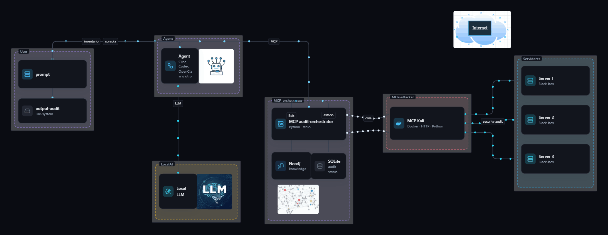

01
Are many services exposed?
Web, databases, remote access, file shares, directory, mail, and the port that still has no name.
Click or press any key to skip
Local AI
It works with any local model. Tested from 4B parameters up, with no upper limit. The entry point is a set of assets and their ports. The software structures the audits and orchestrates them on its own. The result is an evidence report for your whole infrastructure. The environment is 100% Dockerizable.
[black-ops]
The committee's security questions
01
Web, databases, remote access, file shares, directory, mail, and the port that still has no name.
02
Several hosts and several ports can move at once, inside a cap you set. On one port, the checks follow the catalog order.
03
The inventory, the command output, and the findings can stay on the customer's network. That choice is the deployment, and a closed deployment is possible.
Surface
The knowledge source is a Neo4j graph database. In mode 2 and mode 3 runs, the LLM takes control: it reads the results and acts when that is required.
An unidentified service is recognized first. The order comes from the catalog.
Architecture
System architecture: the agent and the local model talk both ways. The agent and the orchestrator talk both ways. A queue sends work to the Dockerized Kali MCP. Three streams leave Kali for the servers under audit. The environment is 100% Dockerizable. Execution has been tested from Cline in Visual Studio Code, cline-cli, Codex, and OpenClaw.

How is this possible with a local model?
A set of ports and assets.
Each service opens its own path. The next step does not fire blind: it starts when the previous one left a reason, such as a version or an open login.
A log, the real command output, and the findings. If a report cannot copy the proof, it is not stored. The live console shows the run before it closes.
It stays on your network. This is not a cloud scanner. The finding arrives with proof, and the decision to accept or fix the risk stays yours. We do not sell zero false positives, a coverage percentage, or a fixed audit time.
Six pieces
Inventory
Hosts and open ports. Nmap does not run the audit. It only supplies the list.
Catalog
Each service family has an ordered list of checks. The next check waits for a condition from the one before it.
Conductor
It walks the catalog. It does not fire every check blindly. It follows the path the results open.
Workshop
Checks run through a local HTTP API written in Python and Flask. That traffic does not go to a vendor.
Archive
Every output is kept, with a log. SQLite holds the audit state. The live console shows the run.
Reviewer
A language model reads a clip of each output. Temperature is fixed at 0. It may use only lines from that file.
The model does not replace the catalog. In mode 2 and mode 3 runs, the LLM takes control.
Three modes
Mode 1
The LLM acts only at the start and at the end of the audit. It can call the MCP to stop the run, update the status, or extract the findings.
The audit moves on its own. The model steps in to open it, close it, and bring the result back.
Mode 2
It follows the mode 1 flow, and the LLM takes control once the exposed-surface audit of a host is finished.
The same automatic start. The model takes the lead when each host is done.
Mode 3
The LLM takes control for each service.
The deepest option: the model in charge of every service.
| Mode | What it adds | What it needs | When to choose it | What it does not do |
|---|---|---|---|---|
| 1 · Automatic | The LLM acts only at the start and at the end. It can call the MCP to stop the audit, update the status, or extract findings. | Linux, Python 3.11 or newer, Neo4j in Docker, the Kali workshop, the inventory file. | You want the audit to run on its own, with the model only opening and closing it. | The LLM does not take control during the run. |
| 2 · After the host | The mode 1 flow, and the LLM takes control when a host’s exposed-surface audit is finished. | Everything in mode 1, plus a local model. | You want the same run, and the model in charge when each host closes. | It does not take control service by service. |
| 3 · Per service | The LLM takes control for each service. | The same as mode 2. | You want the greatest depth, with the model on every service. | It does not wait for the host to finish before it steps in. |
The more powerful your model, the better the results. The basic model is already covered.